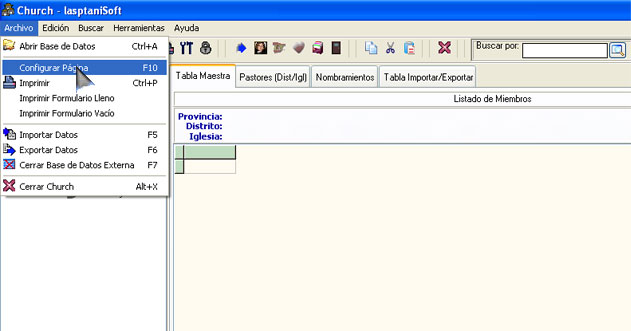

El Menú Principal
El menú principal como en todos los programas consta de varia pestañas con diferentes ventanas con accesos directos a las funciones definidas.

Figura 7. El Menú Principal.
La figura 7 muestra con la elipse rosada el menú principal con las opciones de Archivo y con el mouse apuntando a Configurar Página.
Casi todas las funciones del Menú Principal, o las más usadas, están contenidas en la Barra de Botones, además se ha brindado la posibilidad de que las opciones más utilizadas tengan una tecla de acceso rápido, en el caso de la figura 7 sería la tecla F10.
Del Menú Principal solo vamos a brindar algunos detalles sobre la opción Herramientas, porque las demás funciones están definidas en otros apartados.
Vaya al Menú Principal/Herramientas y verá algunas opciones que podrá usar para su base de datos sea más segura y efectiva.
La opción Establecer Contraseña nos sirve para asegurarnos que nuestra aplicación no sea ejecutada por algún extraño. Si olvida la contraseña, simplemente desinstálela y vuelva a instalarla, porque la opción Eliminar Contraseña solo funciona si introduce la contraseña establecida.
La opción Eliminar Registros Sueltos es un por si acaso, el programa está confeccionado para corregir cualquier error, pero no podemos confiarnos, y si se introduce algún registro suelto (que no tenga razón de ser), el programa se encarga de eliminarlo. No hay problemas con probar esta opción.
La opción Actualizar Edad de los Miembros por No Identidad o por Fecha Bautismo le resultará bien útil. Cuando usted ingresa los datos de cada miembro, que regularmente será por su fecha de bautismo, en el campo Edad usted pondrá la edad que el miembro tiene en ese momento, pero cuando pasen los años y necesite un informe con la edad actual de los miembros, tendría sin esta opción que introducir manualmente la edad de cada uno, ¡ahora simplemente con un clic sobre esta opción la edad de cada miembro de la Tabla Maestra será actualizado según la fecha de su ordenador!
Tenga presente que solo se actualizarán los miembros de la última consulta realizada, por un asunto de velocidad y de necesidad, si quiere actualizar todos los miembros, pues simplemente haga una búsqueda global donde aparezcan todos los miembros, ejemplo: Nombre LIKE '*', ejecute la opción actualizar edad y vuelva a realizar la consulta hasta que aparezcan los datos actualizados.
Hemos incluido las dos opciones, por No Identidad y por Fecha Nacimiento por las razones que exponemos a continuación: para algunos usuarios no será necesario el campo Fecha Nacimiento, por tener uno con No Identidad donde los seis primeros dígitos contienen la fecha de nacimiento, pero estos tendrán un problema cuando vayan a actualizar los miembros que nacieron hasta el año 1929, porque en No Identidad aparecerá solo un 29 y el ordenador tomará esa fecha como si fuera 2029 y la edad resultará negativa, por ellos es más seguro actualizar la Edad por Fecha Nacimiento, ya que este campo contendrá los cuatro dígitos del año. Recuerde que debe repetir la consulta o búsqueda hasta que la actualización aparezca reflejada.